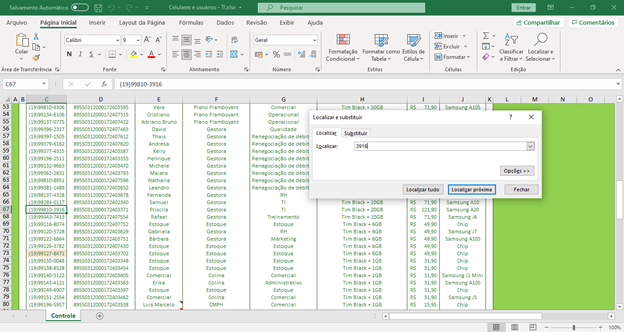
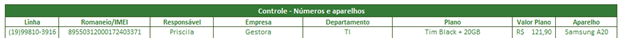
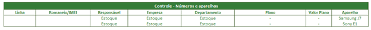

Seja bem vindo ao TI
Celulares e usuários - TI
- 1º passo: Localizar o número do chip que o novo usuário irá utilizar

-
2º passo: Inserir os dados do novo usuário que irá utilizar
Romaneio: Já está preenchido e não deve ser alterado.
Responsável: Nome ou Estoque (chips que estão no estoque do TI)
Empresa: CMPH, Colina, Plano Flamboyant, Memorial Garden, Gestora (Staffs – Financeiro, Renegociação de débitos, Qualidade, RH, Marketing e TI) ou Estoque (chips que estão no estoque do TI)
Departamento: Administrativo, Assuntos Corporativos, Comercial, Diretoria, Estoque (chips que estão no estoque do TI), Financeiro, Jurídico, Marketing, Operacional, Qualidade, Renegociação de débitos, RH, TI e Treinamento.
Plano: Já está preenchido e não deve ser alterado, no caso de novos chips para o Memorial Garden há necessidade de inserção de informações.
Valor Plano: Já está preenchido e não deve ser alterado, no caso de novos chips para o Memorial Garden há necessidade de inserção de informações.
Aparelho: Sempre deve ser atualizado de acordo com o celular que o usuário irá utilizar.

-
3º passo: Inserir os dados de celulares em estoque do TI
Linha: Manter conteúdo vazio Romaneio: Manter conteúdo vazio
Responsável: Estoque
Empresa: Estoque
Departamento: Estoque
Plano: Manter o conteúdo vazio
Valor Plano: Manter o conteúdo vazio
Aparelho: Inserir o modelo (seguir o mesmo padrão já digitado “Samsung A10S” para facilitar filtragem)

-
Observações
- Chip de 50Gb é utilizado pelo Daniel, gerente de assuntos corporativos (aprovado pela diretoria)
- Chip de 50Gb é utilizado no modem 4G que fica com o CMPH/Colina
- Chips de 20Gb são utilizados para diretoria e supervisora de TI
- Chips de 10Gb são utilizados para supervisores e gerentes
- Chips de 6Gb são utilizados para o operacional que não fica restrito as unidades ou que sejam analistas
- Chips de 1Gb são utilizados para PABX e usuários que ficam restritos as unidades